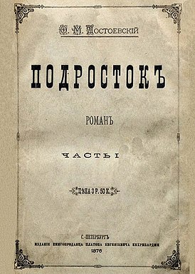
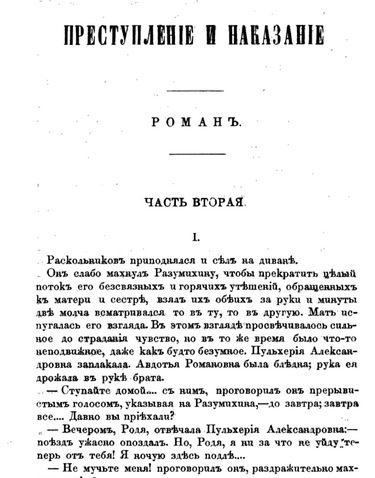
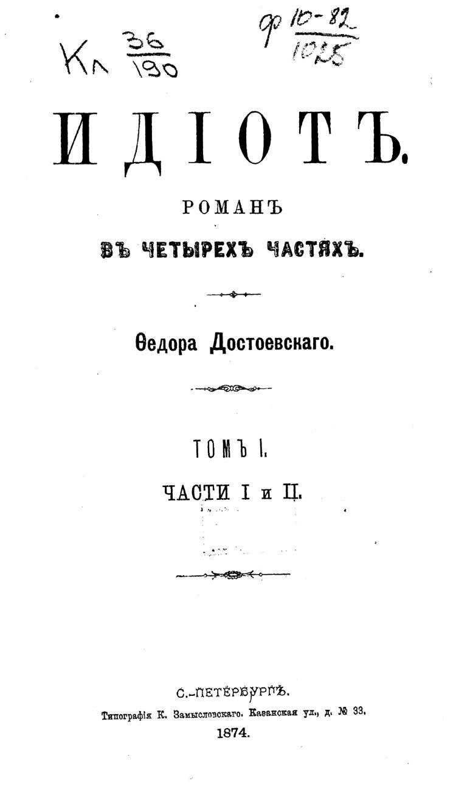
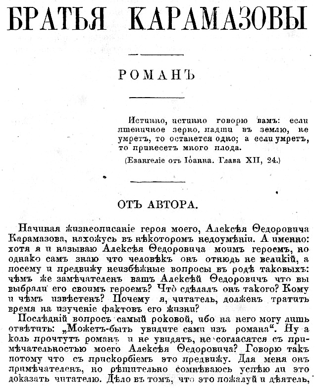
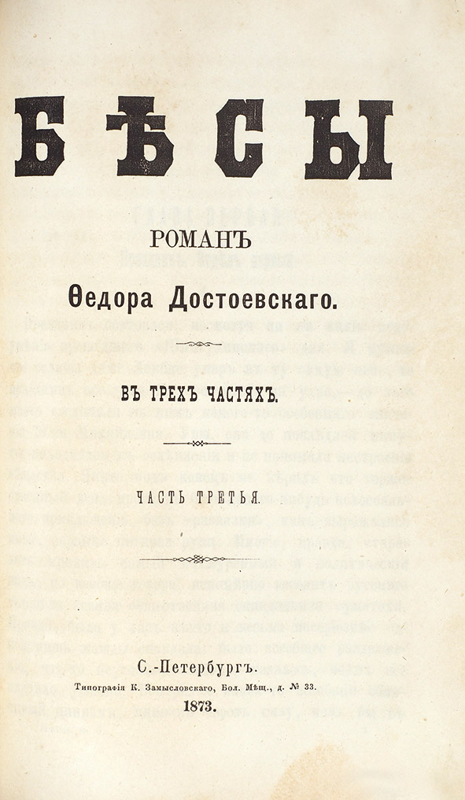

Краткая биография
Фёдор Михайлович Достоевский (1821–1881) — русский писатель, мыслитель, философ и публицист, член-корреспондент Петербургской академии наук. Родился 11 ноября 1821 года в Москве в семье врача. С 1832 года Фёдор вместе со старшим братом Михаилом получали домашнее образование, с 1833 года учились в пансионе Н. Драшусова, затем в пансионе Л. Чермака.
С 1838 по 1843 год Фёдор Достоевский учился в Инженерном училище Санкт-Петербурга. После окончания училища Фёдор Достоевский служил в инженерной команде Санкт-Петербурга.
В 1844 году Достоевский решил оставить военную службу, чтобы полностью посвятить себя литературе. В 1846 году был опубликован его первый роман «Бедные люди», который сразу принёс ему известность.
В 1849 году Достоевский был арестован за участие в кружке Петрашевцев, который выступал против самодержавия. Писателя приговорили к смертной казни, однако приговор был заменён на каторгу.
В 1859 году Достоевский вернулся из ссылки и снова занялся литературой. Написал романы «Униженные и оскорблённые» и «Записки из мёртвого дома», где отразил свой опыт каторги и ссылки.
В 1866 году опубликован роман «Преступление и наказание», посвящённый философским и моральным вопросам.
В 1867 году писатель уехал за границу, где провёл несколько лет. В этот период были созданы такие произведения, как «Идиот» (1868) и «Бесы» (1872).
В 1879–1880 годах Достоевский завершил свой последний великий роман — «Братья Карамазовы». В этом произведении нашли отражение все ключевые темы творчества писателя: вера, сомнение, преступление и искупление.
9 февраля 1881 года Фёдор Михайлович Достоевский скончался в Санкт-Петербурге от болезни лёгких. Его творчество оставило глубокий след в русской и мировой литературе, повлияло на развитие философии, психологии и искусства.
Известные произведния
-
Подросток
Главный герой романа — Аркадий Долгорукий, стремящийся утвердиться в жизни через накопление капитала. На пути к своей цели он сталкивается с моральными дилеммами, сложными отношениями с отцом и внутренним кризисом. Произведение исследует темы поиска идентичности, отцовства и духовной зрелости.
 -
Преступление и наказание
Роман, исследующий проблему морального выбора и ответственности через историю студента Родиона Раскольникова, который совершает убийство, проверяя свою теорию о «сверхчеловеке». Герой переживает глубокий внутренний кризис, осознавая ошибочность своих идей. Искупление и духовное возрождение приходят к нему через любовь и веру, воплощённые в образе Сони Мармеладовой.
 -
Идиот
Роман, рассказывающий о князе Мышкине, человеке необычайной душевной чистоты и добродетели, который оказывается чуждым циничному и жестокому миру. Несмотря на свои лучшие намерения, князь лишь усугубляет конфликты и трагедии вокруг себя, сталкиваясь с непониманием и враждебностью общества.
 -
Братья Карамазовы
Главный герой романа — Аркадий Долгорукий, стремящийся утвердиться в жизни через накопление капитала. На пути к своей цели он сталкивается с моральными дилеммами, сложными отношениями с отцом и внутренним кризисом. Произведение исследует темы поиска идентичности, отцовства и духовной зрелости.
 -
Бесы
«Роман, исследующий темы веры, морали и семейных отношений. В центре сюжета — трагическая история семьи Карамазовых, где страсти, зависть и амбиции приводят к убийству отца, Федора Павловича. Через судьбы братьев — Дмитрия, Ивана и Алеши — автор размышляет о Боге, свободе воли и смысле жизни.

Занимательные факты
- Когда старший брат Достоевского скоропостижно скончался, писатель взял на себе его огромные долги, которые выплачивал практически всю жизнь.
- Сестра писателя Варвара частично повторила судьбу старухи-процентщицы из «Преступления и наказания»: ее убил дворник, чтобы ограбить.
- Сложно поверить, но Достоевский не был высокооплачиваемым автором: долгое время его гонорар за печатный лист составлял 150 рублей, в то время как Толстой за ту же работу получал 500 рублей.
- Известная цитата из романа «Идиот» про красоту, которая спасет мир, в большей степени относится к красоте внутренней. По крайней мере, сам автор вкладывал в нее именно этот смысл.
- Одно из самых страшных детских воспоминаний писателя — гибель девочки-сверстницы: несчастной было примерно девять лет, она пережила насилие и умерла в больнице. Образ замученного ребенка позже будет неоднократно появляться в романах Достоевского.
- Самые известные романы Достоевского поражают своей мрачностью. Критики насчитали в «Преступлении и наказании» 21 смерть, в «Идиоте» — 31, в «Бесах» — 15, в «Подростке» — 34, а в «Братьях Карамазовых» — 43.
- Достоевский большое значение придавал личности Христа и считал его идеалом человека во плоти .
- Эйнштейн считал «Братьев Карамазовых» «самой пронзительной книгой» из всех, что попадали ему в руки.
- Роман «Игрок» был написан Достоевским всего за три недели — писатель торопился получить гонорар и рассчитаться с долгами.
- Планировалось, что «Братья Карамазовы» станут лишь первой частью романа «История великого грешника», но осуществить задуманное писателю помешала смерть.
- Всю жизнь Достоевский хранил Евангелие, которое ему подарили в Тобольске, по пути на каторгу в Омск, жены декабристов. Перед смертью он отдал его сыну Федору.
- После русской революции 1917 года во Франции стали невероятно популярны «Бесы»: книгу стали трактовать как роман-предсказание, объясняющий суть переворота.